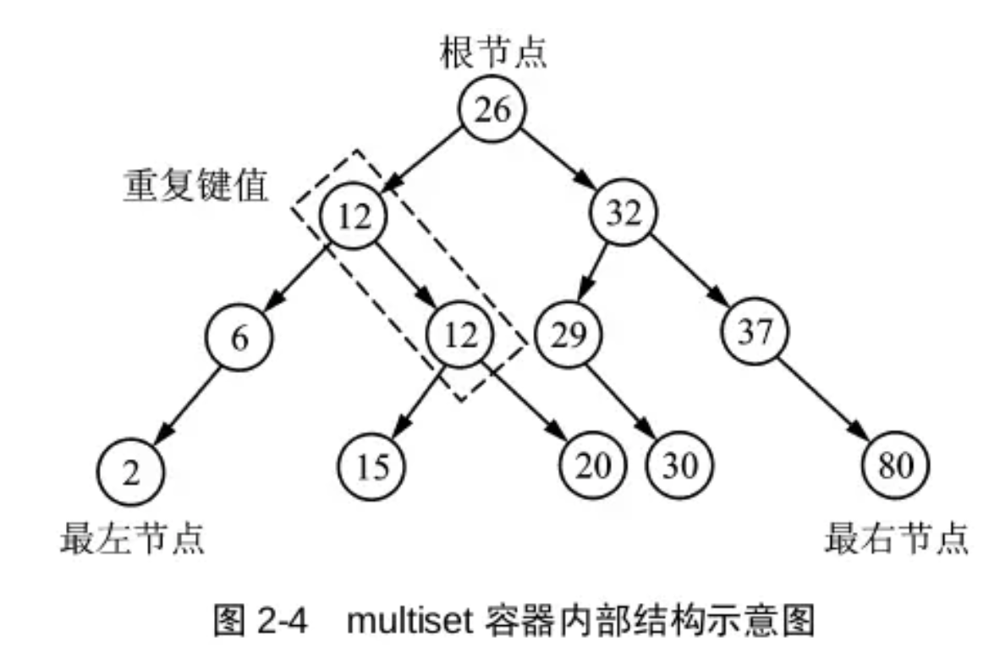
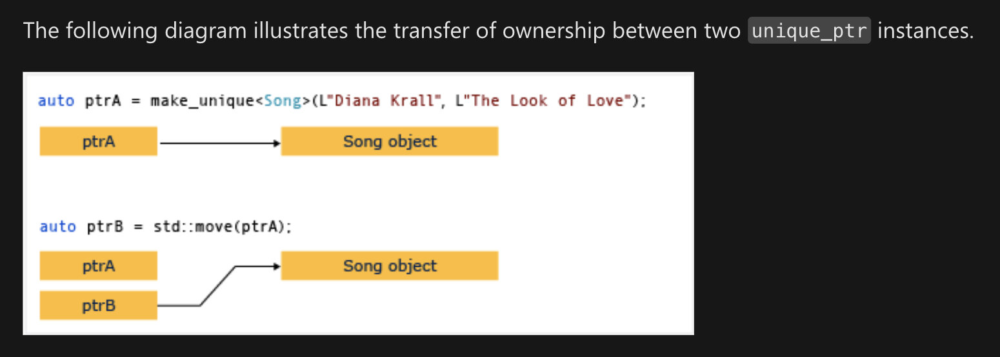

char
转小写：tolower(chr)
string
String -> int stoi(str)
int -> string to_string(number)
Char -> string string(1, 'a');
split
1 | string str = "a b c" |
字符串的类栈函数
1 | string str; |
array
动态创建数组
1 | int *p = new int[len]; |
释放
1 | delete[] p; |
vector
push_back()是深度拷贝
一维数组初始化
1 | vector<int> vec(100, -1); |
二维数组初始化
1 | vector<vector<int>> vec; |
复制
1 | vector<int> vec2(vec1); |
清空
1 | vector<int> vec = {1,2,3}; |
排序
1 | sort(v.begin(), v.end()); //顺序 |
注意用accumulate的时候，v.begin. v.begin()+2，是前闭后开的
二次排序
1 | bool cmp(vector<int> v1, vector<int> v2) { |
删除
1 | for (auto it = vec.begin(); it != vec.end();) { |
map
对key排序：
默认即为按照key递增排序
修改默认为递减：
1 | map<int, string, greater<int>> m; |
对value排序：
1 | //排序 如果针对value进行排序，需要把map的pair放入vector，然后再对vector排序 |
补充：
一般会用到的写法：
1 | sort(people.begin(), people.end(), [](const vector<int>& u, const vector<int>& v) { |
lamda语法：[] (A x, A y) -> bool {return x < y;}
[ capture list ] ( parameter list) -> return type { function body; };
[捕获列表]( 参数列表 ) -> 返回值类型{函数体}
注意：[]表示哪些参数需要传入，空的话表示不需要传入任何参数，常见的有&和=
补充捕获列表：
- [] 不捕获任何变量。
- [&] 捕获外部作用域中所有变量，并作为引用在函数体中使用（按引用捕获）。
- [=] 捕获外部作用域中所有变量，并作为副本在函数体中使用（按值捕获）。
- [=，&foo] 按值捕获外部作用域中所有变量，并按引用捕获 foo 变量。
- [bar] 按值捕获 bar 变量，同时不捕获其他变量。
- [this] 捕获当前类中的 this 指针，让 lambda 表达式拥有和当前类成员函数同样的访问权限。如果已经使用了 & 或者 =，就默认添加此选项。捕获 this 的目的是可以在 lamda 中使用当前类的成员函数和成员变量。
unordered_map
大多数哈希表的计数问题，都能转为数组
哈希表更新和查询是均摊O(1)，定长数组的更新和查询是严格O(1)
初始化
1 | unordered_map<int,int> m{{0,1}}; //注意外面是大括号，而vector，set这类外面是小括号 |
1 | s[m] != 0; // 判断是否已经有元素，这里最好不要直接用，因如果second存储的是索引的话，可能存储的是0，但表示有元素，易错！ |
遍历：
1 | for (auto mm : m) { |
求最大值：
1 | unordered_map<char, int> m; |
清除元素：
1 | st.erase(num); |
lower_bound 返回一个迭代器，指向 >= key的第一个元素
upper_bound返回一个迭代器，指向>key的第一个元素
ps：这两个属于std::map::lower_bound
用法：
1 | map<int, int> m; |
如果需要排序，可以用vector存储key，然后再对vector排序
1 | sort(vec.begin(), vec.end(), [&] (string a, string b) -> bool { |
set
以默认的顺序，可以简单修改正逆序
1 | set<int, less<int>> st; //默认升序 |
提醒一下，如果对string形式的数字排序，直接用默认排序方法的话，“10” < “9”，因为是字典序比较，一位一位比
基于平衡树实现，key以一定的顺序排列
1 | s.insert(num); |
unordered_set
基于hash table实现，可以以任何顺序排列，key被hash为indices，所以插入是随机的
1 | unordered_set<int> s = {1, 2, 3}; |
queue
初始化
1 | queue<TreeNode*> q({root}); |
priority_queue
1 | priority_queue<int, vector<int>, less<int>> q; // 降序队列，从队头到队尾递减 大根堆 默认是大根堆（大顶堆） |
push 插入元素到队尾
top pop 访问和弹出队头元素
找第k大的元素，可以维护一个K大小的小根堆，堆顶（队头）也就是第K大
1 | for (int num : nums) { |
【LeetCode 1337】
1 | class Solution { |
ps：优先队列中的less是大根堆，与正常思路来说是反的，因为less一般表示a<b，也就是升序。
multiset
内部是平衡二叉树，插入元素会自动调整，保证root-val > root-left->val
也保证根节点左右子树高度相等，这样二叉树高度最小，检索速度最快
这个是允许重复元素的set，一种基于红黑树的数据结构，可以自动对元素进行排序（默认升序），又允许有重复值
两种删除方式：
- 删除值
erase如果删除元素，是默认把所有等于该元素的值删除掉，并返回删除元素的个数 - 可以通过find找到确定的iterator再删除
m.erase(m.find(val));
// 和小根堆效果一样
1 | for (int num : nums) { |
list
链表
push_back()erase
迭代器知识
it.begin() 返回一个迭代器，指向第一个元素
it.end() 指向最后一个元素的下一个元素
it.rbegin() 指向最后一个元素
it.rend() 指向第一个元素的前一个位置
在递增序列中：
lower_bound: 返回[first, last)中第一个>=val 的位置，假如有多个相等的同时满足，返回第一个
upper_bound: 返回[first, last)中第一个>val的位置
如果大于所有vector的元素，则返回end()，如果小于所有元素，那肯定是返回vec.begin()
1 | int a[15]; |
如果在递增序列中寻找不大于value的最大值，可以先用upper_bound获得大于value的最小值，然后再取它的前一个元素即可，如果upper_bound已经是begin了或者没有找到满足条件的值，那么不存在这样的值
1 | auto it = m.upper_bound(value); |
在递减序列中：
lower_bound() 第一个小于等于value的迭代器
upper_bound() 第一个小于value的迭代器
1 | auto it = lower_bound(vec.begin(), vec.end(), greater<int>()); |
内部有序的数据结构：
下面三种都基于红黑树实现
set
也可以更改默认排序方式
// 从大到小排序的比较器函数对象 struct Compartor { bool operator()(const int lhs,const int rhs) const { return rhs < lhs; } }; // 声明使用自定义比较器的set set<int,Compartor> s; // 按照从小到大的顺序插入 for (int i = 0; i < 10; i++){ s.insert(i); }
multiset
map
智能指针
https://docs.microsoft.com/en-us/cpp/cpp/how-to-create-and-use-unique-ptr-instances?view=msvc-160
一个智能指针用来表示一个单例
指针不能被复制，只能被move
